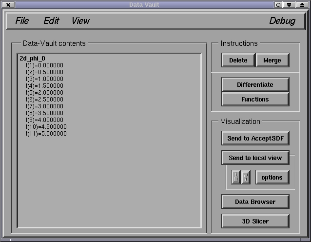
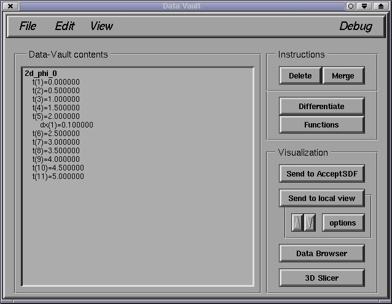
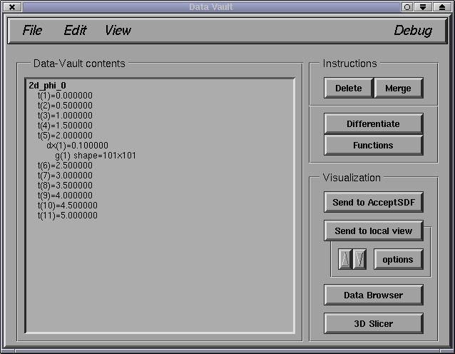

In this case, 2d_phi_0 has 11 time levels. Double-clicking on time level 5 will show that there are grids with a single resolution (labeled by the mesh spacing of the first coordinate dx) at this time:

Finally, double-clicking on dx(1)=... above will show the single 101x101 grid stored there:

To hide a sub-list of information, simply double-click on the corresponding item again.
The numerical contents of an individual grid can be viewed using the data browser (DB). First, click on the Data Browser button on the main window to open the DB window. Then, single clicking on individual grids with the middle mouse button will refresh the DB window with the corresponding data.
NOTE: currently, only 1D and 2D grid functions can be viewed with the DB; furthermore, the DB ignores curvilinear coordinate information, hence the coordinate labels for such grids may be incorrect.